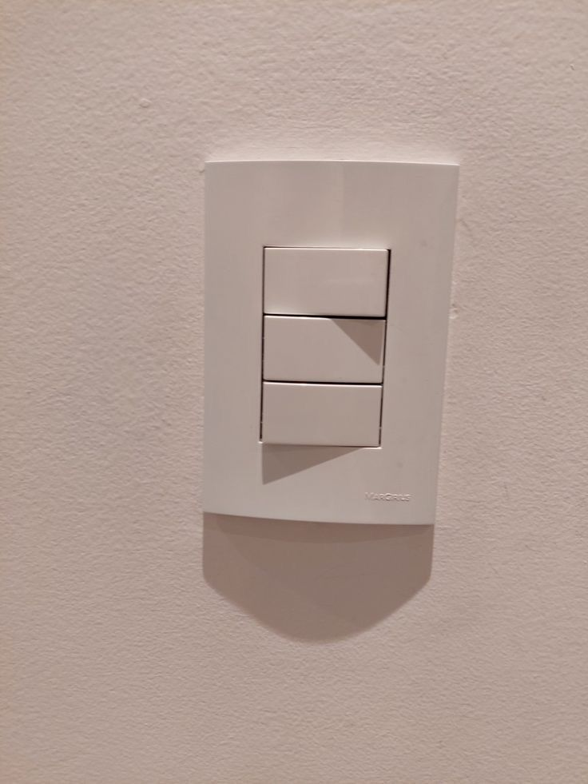

Fontes Energéticas no Campo
O fornecimento de energia é indispensável para o funcionamento diário das atividades rurais, viabilizando desde sistemas de irrigação até o uso de maquinário moderno que aumenta a eficiência e os resultados da produção agrícola.
Nos dias atuais, produtores rurais têm buscado alternativas sustentáveis, como a energia solar, o biogás e a eólica, que oferecem economia e maior autonomia para as propriedades.
Essas soluções também contribuem para práticas mais ecológicas, reduzindo o impacto ambiental e fortalecendo a sustentabilidade na zona rural.